Six things you named on the Hub tonight. For each one: what was actually wrong (measured, not guessed), what changed, and the number before and after. Five are fixed on a branch. The sixth, YouTube transcripts, is a set of options with a recommendation; nothing was installed.
Nothing here is live. It is a branch for the coordinator to look at, merge and deploy. Every picture was taken in a real browser on this Mac, running hidden (never on your screen), at desk width (1680) and phone width (390). To test the branch at the real address, the browser was handed the branch's page whenever it asked for scintillahub.ai; everything else it read came from the live services. Anything that would have written (a like, a save) was blocked and none was attempted. The measurements were taken after the close (about 10:45 PM – 11:15 PM ET), so market-hours timings will be slower where noted.
What was wrong. When the Hub opens, it paints the board from a copy saved in your browser the last time you looked at LIKED, so the page is not empty. That copy had no age limit and was shown as if it were current. It hid the price and change, but it still showed last session's F P/E, RVol, the dimmed NO FEED rows and the old order. About three seconds later the live numbers arrived and the rows jumped into today's order: "something old, then back to normal".
Which fix it was: both. A saved copy older than 10 minutes is not painted at all; you see the plain "loading LIKED …" board for the ~3 seconds until live rows land. A copy younger than 10 minutes shows only the layout (names, market cap, revenue, each carrying its own stored date), every live cell reads "…", the rows are dimmed, and the header says "as of HH:MM ET" until the live rows land.
| reload, desk | first frame | live rows |
|---|---|---|
| before · copy 18 h old | 202 ms · old F P/E, RVol, NO FEED, old order, no age shown | 3.1 s, rows re-rank |
| after · copy 18 h old | not painted: "loading …" | 2.9 s, live values, no jump |
| after · copy 5 min old | 188 ms · layout only, "…" cells, dimmed, "as of 22:43 ET" | 3.3 s |
| phone · before / after | 192 ms old values / 180 ms dimmed with "as of 22:45 ET" | 3.2 s / 3.5 s |
To make the old values visible in the test, the saved copy was marked (F P/E 99.9×, RVol 9.9×, NO FEED on every third row, order reversed). Before, those marks painted; after, none of them do.
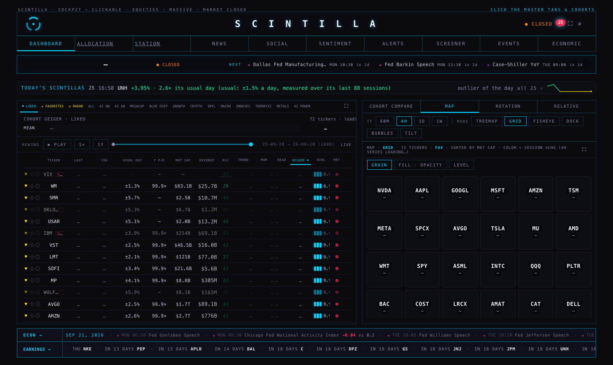
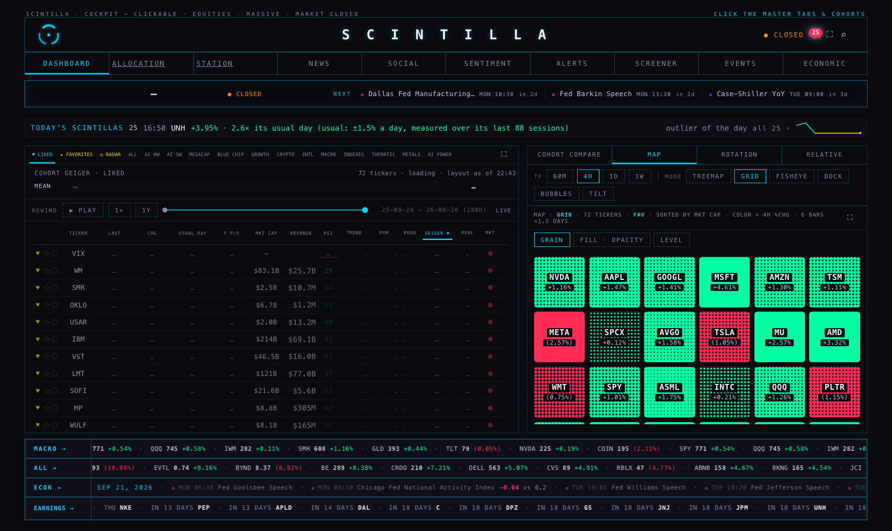
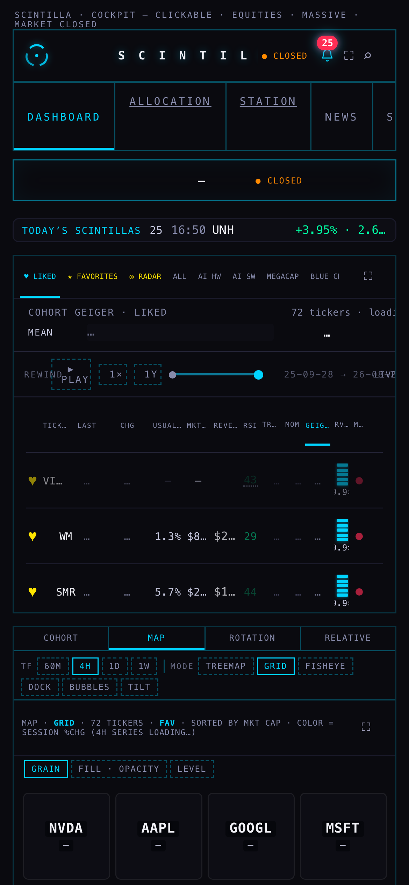
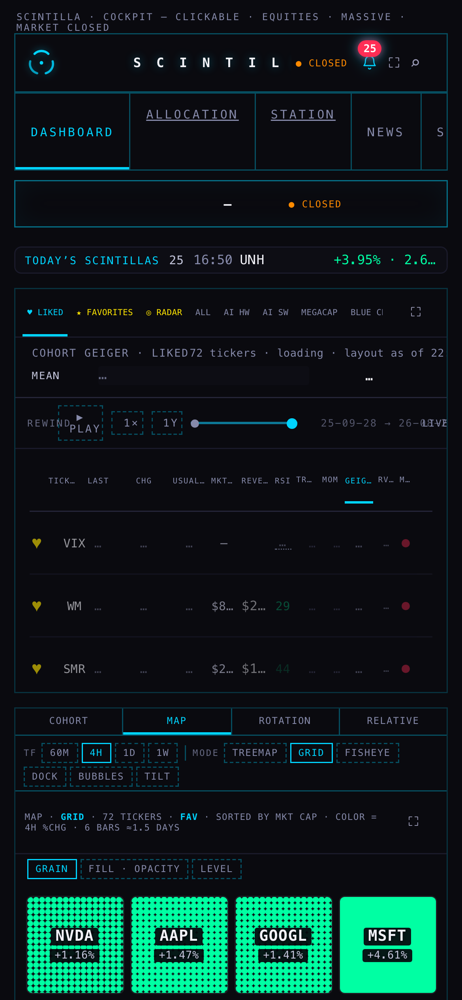
Also fixed: every 45 s the USUAL DAY column blanked to "—" and refilled (a second "changes, then goes back"). It now keeps its value through the refresh.
| measured | before | after |
|---|---|---|
| COHORT COMPARE, clicked on a cold load, until every column has a number | 2.08 s | 1.82 s |
| what it waits for | the whole board pull (the page's own market-hours record: 17.5 s median, 30.2 s worst) | only the Geiger read (~2 s) |
| SECTOR COMPARE toggle | instant, but the COHORTS / SECTORS chips never lit | instant, the chip lights, header says SECTOR COMPARE |
| clicking a cohort column: database reads in the next 4 s | 23 (a full re-pull of rows already on screen) | 4 |
| ROTATION on CRYPTO | "11 sectors vs SPY" | "11 names · CRYPTO vs SPY" |
| ROTATION on ALL | 11 sectors | 11 sectors (unchanged) |
| PLAY, go to NEWS, come back | stuck: bar gone, columns hidden, a page error, Esc does nothing; only a reload recovers | replay ends cleanly, board live, no error |
| paused in the past, then NEWS and back | came back saying "live" with no way out for up to 45 s | comes back in the past with its LIVE chip |
| way out, from anywhere | a small chip on the rewind bar only (scrolls away on a phone) | a fixed "↻ LIVE · Esc" button, bottom right, on every room while rewound; one click or Esc |
Why compare was slow or broken. Slow: its numbers were a by-product of the whole board pull, and every column click re-ran that pull. Broken: while the board was rewound, each day was read only for the names on the current board, so every other cohort and sector column read "—"; a PLAY interrupted by a room change stopped the player for good. Each day is now one read of the whole universe (about 383 rows, 50–140 ms measured) instead of 24 small reads.
ROTATION and RELATIVE follow the cohort the way MAP already did: on ALL they keep the eleven sector funds; on any cohort or sector they draw that group's twelve largest names against SPY.
Also found and fixed: after a second replay in the same session, "back to live" restored the Geiger values captured at the first replay (possibly hours old) until the next refresh.
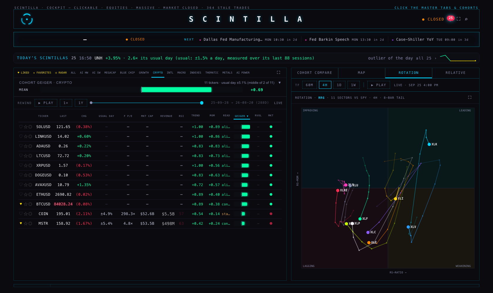
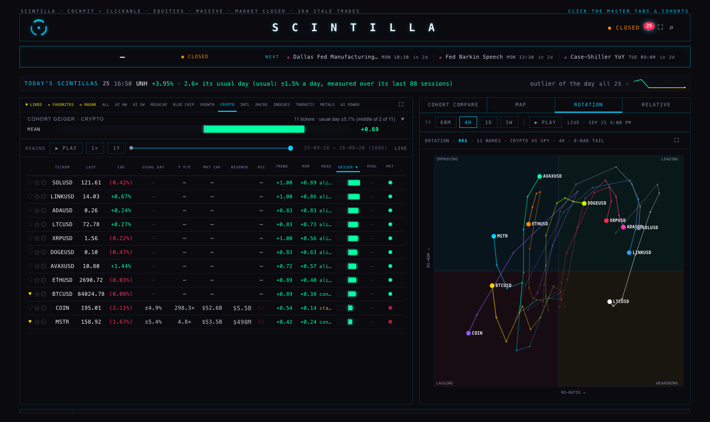
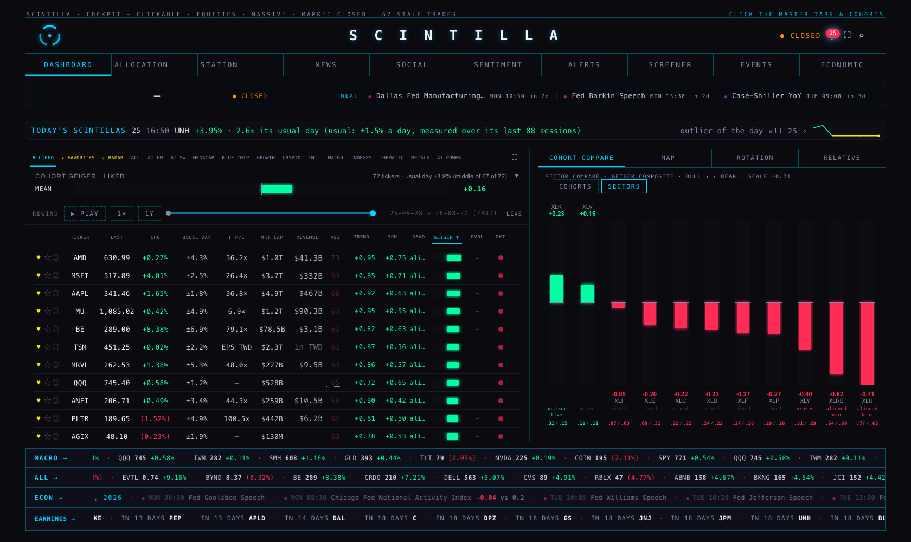
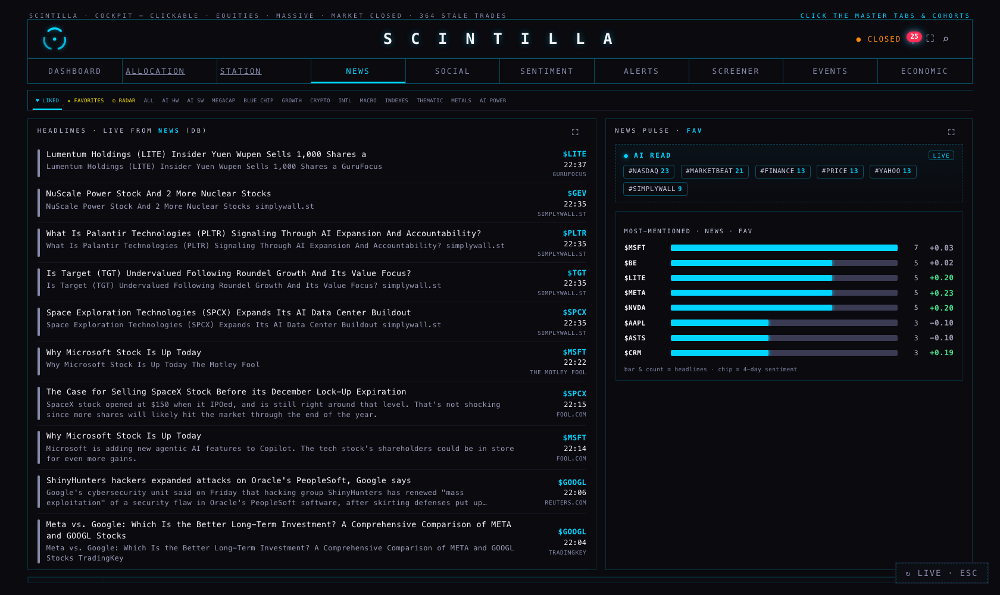
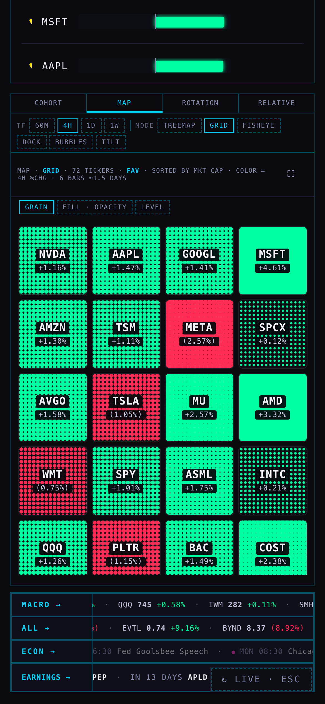
The player itself was not redesigned (a Fable lane is proposing v3).
| MU, daily, from the click | price drawn | clouds | RSI fan | the chart's own toolbar |
|---|---|---|---|---|
| before (live today) | 5.76 s | 11.47 s | not shown | visible under the Hub's, cut off at "clo…" |
| after, with today's Station | 5.85 s | 11.63 s | 12.10 s | tucked under the Hub's row |
| after, once the Station's S1 change is deployed (preview) | 0.44 s | 1.07 s | 1.18 s | gone; one row |
| phone, before / after (today's Station) | 6.23 s / 5.92 s | 12.14 s / 12.86 s | — / hidden by design at phone width | cut off / tucked |
Why it was slow and why the cloud came late: the chart waits for a "go ahead" that only the Station's own wall hands out. Inside the Hub nobody answers, so it waits 5.5 s before the price and another 5.5 s before the clouds. The data itself takes 0.2–0.4 s. This wait lives in the Station, not the Hub, so the Hub alone cannot remove it. The Station's S1 lane added a Hub mode that skips it (?bare=hub); it is on the S1 branch and not yet deployed. The Hub now always asks for that mode. Today's Station ignores the request and draws exactly what it does now, so nothing breaks; the Hub checks once per visit whether the Station understands it, and the moment S1 is deployed the fast numbers in the third row apply with no further Hub change. The "preview" row was measured by serving the S1 branch's chart file in place of the live one inside the test browser.
RSI: on, using the fan's own rule (rsi=auto): shown on the desk, hidden when the chart is 390 px or narrower, where the fan's band would crush the price. Crop: the price and date axes were never cut; what was cut was the chart's own second toolbar, now tucked (today) or removed (after S1). Zoom: the chart already owns the wheel inside the Hub (tested: a wheel zoom moved the view from bars 0–239 to 103–239 and the page did not scroll). It always zooms toward the newest bar and cannot zoom out past about a year; changing that is a Station decision (below).
"last bar HH:MM ET · N min ago · Massive" now sits on the chart's row, and the same stamp is on the MAP, ROTATION and RELATIVE headers, so a stale chart is obvious.
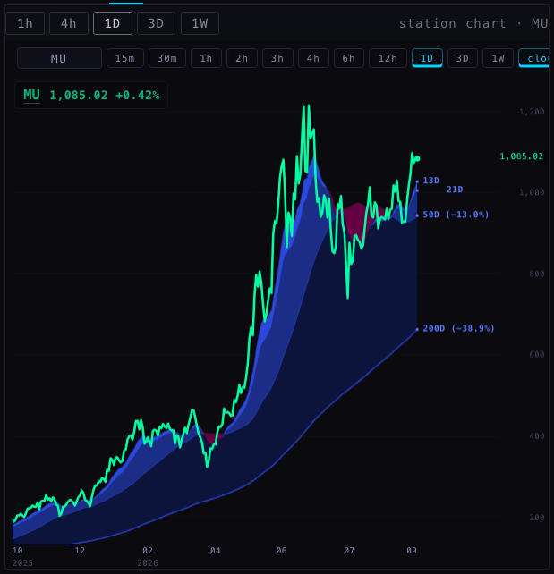
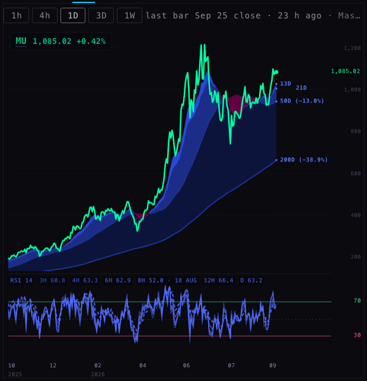
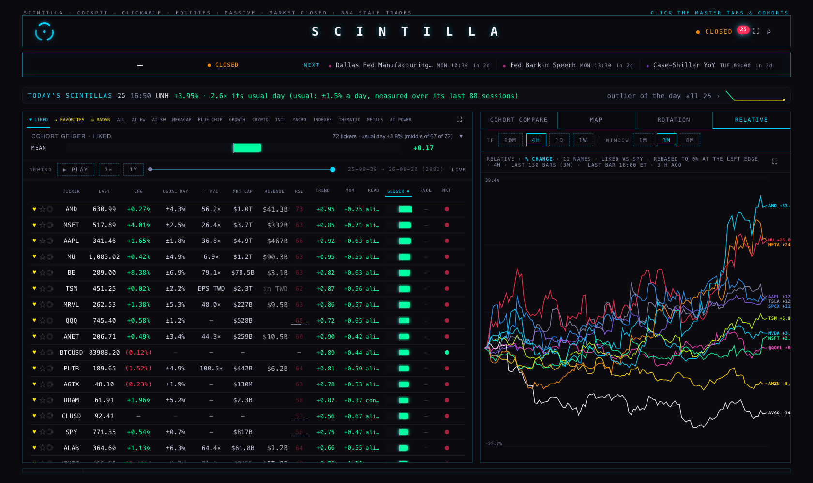
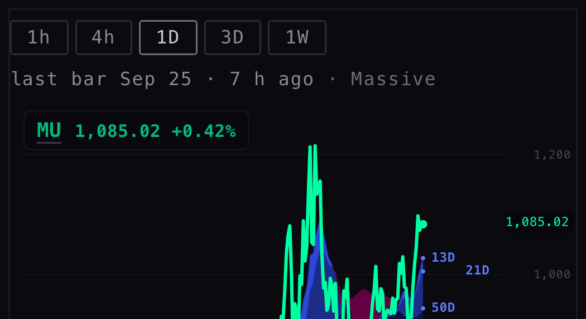
Now ⊙ RADAR · ★ FAVORITES · ♥ LIKED, radar leftmost. Each has its own grey: a cool grey for RADAR (#A0A8B8), a warm grey for FAVORITES (#B8B0A0), a rose grey for LIKED (#B4A4AC). All three are greys by the house rule (channels within 24 of each other, none above 210, never white). Before, all three were yellow and the active one turned cyan. The radar is a ring with a centre dot. Each row keeps its tap-to-toggle icons, in the same order and inks (on a phone a row keeps only ♥, as before; the others are on the company bar).
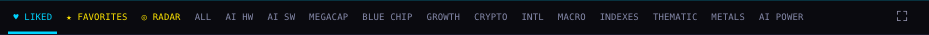
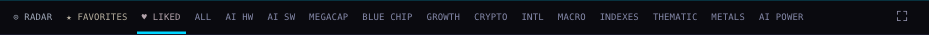
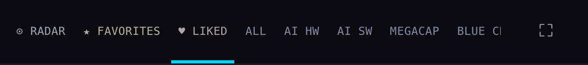
You asked: "what is this Google's FMP source date? I thought the stock price information was from Massive." Both are true. Prices and chart bars are Massive. Fundamentals (revenue, market cap, P/E, margins, the quarterly tables) are FMP (Financial Modeling Prep) numbers we store, dated by when we last wrote them. The FUNDAMENTALS tab now says so above the Station's pane:
PRICE · DAY Massive · live quote · FUNDAMENTALS FMP · updated Sep 25, 2026
and the chart row says last bar … · Massive.
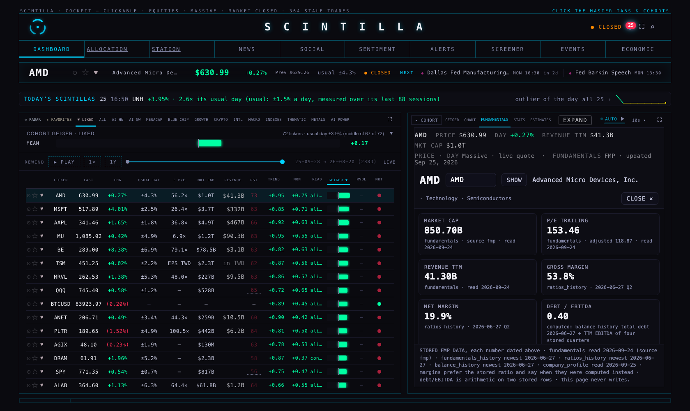
Today: the youtube_transcripts table exists and holds 0 rows; YouTube sentiment is scored on video titles only. The transcript job was designed to run on this Mac every 30 minutes and was never installed.
| option | evidence | verdict |
|---|---|---|
| (a) YouTube's official captions API | Google's docs: captions.download "requires the user to have permission to edit the video", OAuth scope youtube.force-ssl, 200 quota units per call. | Only works for our own videos. Not usable for other channels. |
| (b) the public caption file, from this Mac (home internet) | Tested tonight, one public video (1F0hz8mEHIY), 03:14 UTC. Web route: page HTTP 200, caption file HTTP 200 but 0 bytes (withheld). Mobile-app route: player HTTP 200, caption file HTTP 200, 922,790 bytes. History: this Mac's cache shows 22 Sep 20:31–20:39: 32 fetched, 5 had captions off, then IpBlocked after about 37 fetches in 8 minutes. | Works, but only slowly (the job paces 8 s apart, 40 per pass) and YouTube can block the home IP. Needs the Mac awake. |
| (b) the same, from Fly or Supabase | Not tested: it cannot be done without deploying code, which this lane may not do. The transcript library's own documentation: "YouTube has started blocking most IPs that are known to belong to cloud providers (like AWS, Google Cloud Platform, Azure, etc.)" and recommends paid rotating residential proxies. | Expect blocks. Same lesson as X. |
| (c) a transcript service | Supadata: free 100 transcripts / month; paid from about $5 / month, and $17 / month for 3,000; videos without captions cost extra (2 credits per minute). YouTube-Transcript.io from $9.99 / month. | Most reliable, runs from the cloud. Costs money: needs your yes. |
| (d) our own speech-to-text on the audio (Whisper) | This Mac: Apple M5 Max, 36 GB, ffmpeg present, no Whisper and no audio downloader installed. Downloading audio hits the same YouTube blocks as (b), and transcribing costs Mac time. | Only as a fallback for videos with no captions. |
From the published X feed file (the one the Hub reads), 26 Sep 03:15 UTC: last collection finished 25 Sep 22:30 UTC (6:30 PM ET), newest post 22:29 UTC, collector status "idle" (between passes; it runs about nine times a day), 19,479 posts held. Posts per day this week (UTC): 18 Sep 904 · 19 Sep 416 · 20 Sep 429 · 21 Sep 1,207 · 22 Sep 1,048 · 23 Sep 1,106 · 24 Sep 1,181 · 25 Sep 892 (day not over). The station_x_health table refuses the page's public key (HTTP 401), so it was not read; no stronger key was used.
fan_daily and momentum_daily, one read per day for the whole universe.Tests: 870 run, 863 pass, 5 fail, 2 skipped. Before any change: 860 run, 853 pass, the same 5 fail, 2 skipped (the 5 belong to other surfaces). 10 new tests were added for this work.